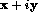

Next: Mathematical Intrinsic Functions
Up: Intrinsic Procedures
Previous: Intrinsic Procedures
In Fortran 90 it is easy to explicitly transform the type of a constant or
variable by using the in-built intrinsic functions.
- REAL(i) converts the integer i to the corresponding
real approximation, the argument to REAL can be INTEGER, DOUBLE PRECISION or
COMPLEX.
- INT(x) converts real x to the integer equivalent
following the truncation rules given before. The argument to INT can
be REAL, DOUBLE PRECISION or COMPLEX.
- Other functions may form integers from non-integer values:
- CEILING(x) -- smallest integer greater or equal to
x,
- FLOOR(x) -- largest integer less or equal to
x,
- NINT(x) -- nearest integer to x.
- DBLE(a) converts a to DOUBLE PRECISION, the argument to
DBLE can be INTEGER, REAL or COMPLEX.
- CMPLX(x) -- converts x to a complex value,  .
- IACHAR(c) returns the position of CHARACTER c in the
ASCII collating sequence, the argument must be a single CHARACTER.
- ACHAR(i) returns the character in the ASCII
collating sequence, the argument ACHAR must be a single INTEGER.
For example,
PRINT*, REAL(1), INT(1.7), INT(-0.9999)
PRINT*, IACHAR('C'), ACHAR(67)
would give
1.000000 1 0
67 C
Now try this question 
Next: Mathematical Intrinsic Functions
Up: Intrinsic Procedures
Previous: Intrinsic Procedures
Adam Marshall ©University of Liverpool, 1996
Tue Nov 26 17:50:42 GMT 1996